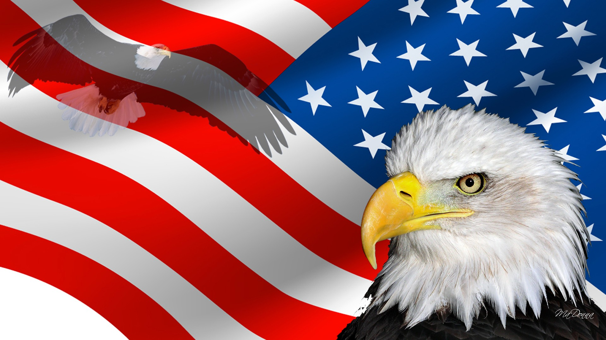

| Text | Picture | Quiz |
|
Соединённые Штаты Америки (США), часто используется Соединённые Штаты, или просто Америка (англ. United States of America, USA, U.S., America) — федеративное государство в Северной Америке. Площадь — 9,5 млн км? (4-е место в мире). Население — 325 млн человек (2015, оценка; 3-е место в мире). США административно делются на 50 штатов и федеральный округ Колумбия; в их подчинении также находится ряд островных территорий. Столица — город Вашингтон. Жителей США называют американцами, а к самим США применяется общее название Америка. Соединённые Штаты граничат на севере с Канадой, на юге — с Мексикой, также имеют морскую границу с Россией. Омываются Тихим океаном с запада, Атлантическим океаном — с востока и Северным Ледовитым океаном — с севера.
Соединённые Штаты Америки были образованы в 1776 году при объединении тринадцати британских колоний, объявивших о своей независимости. Война за независимость продолжалась до 1783 года и окончилась победой колонистов. В 1787 году была принята Конституция США, а в 1791 — Билль о правах, который существенно ограничил полномочия правительства в отношении граждан. В 1860-х годах противоречия между рабовладельческими южными и промышленными северными штатами привели к началу четырёхлетней Гражданской войны. Следствием победы северных штатов стал повсеместный запрет рабства, а также восстановление страны после раскола, возникшего при объединении южных штатов в Конфедерацию и объявлении ими независимости.

|
1.Какую страну от США отделяют всего 4 морских километра?
Канаду
Мексику
Россию
2. Воды какого океана омывают США с запада?
Тихого
Атлантического
Северного Ледовитого
3. Сколько британских колоний были объединены для США?
13
23
33
4. В каком году были образованы Соединенные Штаты Америки?
1767
1776
1777
|